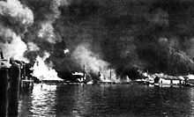
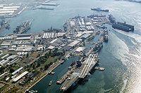
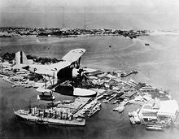

The Officer Candidate School traces its humble beginnings at School for Reserve Commission in 1937. According to Section 34, Article IV of the National Defense Act, the school came into existence. Under the SRC, three Branch Schools were organized: the Field Artillery School in Camp del Pilar, Dau, Mabalacat, Pampanga, Infantry School in Camp Ord, Tarlac, Infantry School in Camp Keithly, Lanao. These schools continued to operate until WWII.
Pursuant to AFP GHQ General Orders No. 412 s-54 :After the war, the SRC was reactivated and assigned with the Philippine Army School Center (PASC), Philippine Army Training Command in Fort McKinley, Rizal. On April 1951 to May 1953-the Philippine Air Force at Nichols Air Base conducted three Officer Candidate Courses and the successful Ocs were subsequently commissioned in the AFP Reserve Force.
September 1954 to April 1959: SRC completed the training of classes 7 to 25. After class 25, the Course stopped again. In 1975, the SRC resumed its training at Camp Tinio, Brgy. Bangad,Cabanatuan City, Nueva Ecija.
  